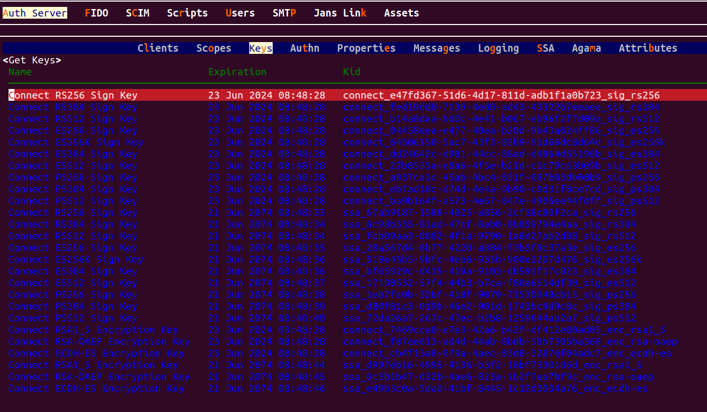

JSON Web Key (JWK)#
The Janssen Server provides multiple configuration tools to perform these tasks.
Use the command line to perform actions from the terminal. Learn how to use Jans CLI here or jump straight to the Using Command Line
Use a fully functional text-based user interface from the terminal. Learn how to use Jans Text-based UI (TUI) here or jump straight to the Using Text-based UI
Use REST API for programmatic access or invoke via tools like CURL or Postman. Learn how to use Janssen Server Config API here or Jump straight to the Using Configuration REST API
Using Command Line#
In the Janssen Server, you can deploy and manage the JSON Web keys using the
command Line. To get the details of Janssen command line operations relevant to
JSON Web Key, you can check the operations under ConfigurationJwkJsonWebKeyJwk task using the
command below:
jans cli --info ConfigurationJwkJsonWebKeyJwk
Operation ID: get-jwk-by-kid
Description: Get a JSON Web Key based on kid
Parameters:
kid: The unique identifier for the key [string]
Operation ID: delete-config-jwk-kid
Description: Delete a JSON Web Key based on kid
Parameters:
kid: The unique identifier for the key [string]
Operation ID: patch-config-jwk-kid
Description: Patch a specific JSON Web Key based on kid
Parameters:
kid: The unique identifier for the key [string]
Schema: Array of JsonPatch
Operation ID: get-config-jwks
Description: Gets list of JSON Web Key (JWK) used by server
Operation ID: put-config-jwks
Description: Replaces JSON Web Keys
Schema: WebKeysConfiguration
Operation ID: patch-config-jwks
Description: Patches JSON Web Keys
Schema: Array of JsonPatch
Operation ID: post-config-jwks-key
Description: Configuration – JWK - JSON Web Key (JWK)
Schema: JSONWebKey
To get sample schema type jans cli --schema <schema>, for example jans cli --schema JSONWebKey
Get Configurations list of JWKs#
We can get list of all configurations of the jwk configuration using a command like this:
jans cli --operation-id get-config-jwks
{
"keys": [
{
"descr": "Signature Key: RSA RSASSA-PKCS1-v1_5 using SHA-256",
"kty": "RSA",
"e": "AQAB",
"use": "sig",
"key_ops_type": [
"connect"
],
"kid": "connect_e47fd367-51d6-4d17-811d-adb1f1a0b723_sig_rs256",
"x5c": [
"MIIDCjCCAfKgAwIBAgIhAInuAAbxL2O7H+/V0lm3bbEdCmdPdgJh+OqljtWpwi7wMA0GCSqGSIb3DQEBCwUAMCQxIjAgBgNVBAMMGUphbnMgQXV0aCBDQSBDZXJ0aWZpY2F0ZXMwHhcNMjQwNjIxMDg0ODE5WhcNMjQwNjIzMDg0ODI4WjAkMSIwIAYDVQQDDBlKYW5zIEF1dGggQ0EgQ2VydGlmaWNhdGVzMIIBIjANBgkqhkiG9w0BAQEFAAOCAQ8AMIIBCgKCAQEA1RCY0ZfJ/SHZ+jojCyStBjIh4upkLXuMgZLi6b7k0fQ8/oNmCBEsOKMPUubHFEHrDHZLbXj7w5gEdMPZOiLaBP8Pv0JD8IbOUtoSXEawE33LRldKiof296nlBJFsX00ipiLq3ANXuTDXtP4+pd+lvIufv1nBXpqqrN4MOsSsKuvKvxRPCg6JusHVU5hsiqbwh9y3X7sPFwqw4LJFa0U3Z4RoX7vCsS/axPPSyUi9x0zsF4S7ZGHclBReC6IipOnGyGeSEQdpuchhoZs382md+wejIf4hVtusRbEHz+wwZFhnrfh/nvHCvrWCcxBgeEntAin+ig1RlR8N4x9Ox9K01wIDAQABoycwJTAjBgNVHSUEHDAaBggrBgEFBQcDAQYIKwYBBQUHAwIGBFUdJQAwDQYJKoZIhvcNAQELBQADggEBACkrKROjAIf6n1PKpXFTRQVov32EFcwhi1YSao/MZHURV2ruYXjh/S6HuvHWWofV8R6muLnD938GytS2mRjr+X7DOZj/bsDT7amd810SDvFUCh6IoPt46FeXFZMV4XyL4DQKoNxOEGGDVnD41NVC6k5GLzPwcVBwX11+b7wRfy/KoPP9aoSXjyWnNbhwClFQ9oTJYkNtaNeh2kJZ2j1UIqO51vyhUjpSM9awqV2u+ouxDKCT4h9xRcDwkOUlVXtBwn+dfJHnG6riLzT59MiPtWeo037hESUxIvJxLQP6jV97eEi/CMhSb1y6YJPFjnTBmCpzeHRp5+DNu65KPaGntB8="
],
"name": "Connect RS256 Sign Key",
"exp": 1719132508905,
"alg": "RS256",
"n": "1RCY0ZfJ_SHZ-jojCyStBjIh4upkLXuMgZLi6b7k0fQ8_oNmCBEsOKMPUubHFEHrDHZLbXj7w5gEdMPZOiLaBP8Pv0JD8IbOUtoSXEawE33LRldKiof296nlBJFsX00ipiLq3ANXuTDXtP4-pd-lvIufv1nBXpqqrN4MOsSsKuvKvxRPCg6JusHVU5hsiqbwh9y3X7sPFwqw4LJFa0U3Z4RoX7vCsS_axPPSyUi9x0zsF4S7ZGHclBReC6IipOnGyGeSEQdpuchhoZs382md-wejIf4hVtusRbEHz-wwZFhnrfh_nvHCvrWCcxBgeEntAin-ig1RlR8N4x9Ox9K01w"
},
{
"descr": "Signature Key: RSA RSASSA-PKCS1-v1_5 using SHA-384",
"kty": "RSA",
"e": "AQAB",
"use": "sig",
"key_ops_type": [
"connect"
],
"kid": "connect_fed19dd0-7139-4ed8-ad43-43322b7eeaea_sig_rs384",
"x5c": [
"MIIDCjCCAfKgAwIBAgIhAKLBm5p06uGv/lXT4tKLgjsS5kosfHb1rgO50fdLAFRoMA0GCSqGSIb3DQEBDAUAMCQxIjAgBgNVBAMMGUphbnMgQXV0aCBDQSBDZXJ0aWZpY2F0ZXMwHhcNMjQwNjIxMDg0ODE5WhcNMjQwNjIzMDg0ODI4WjAkMSIwIAYDVQQDDBlKYW5zIEF1dGggQ0EgQ2VydGlmaWNhdGVzMIIBIjANBgkqhkiG9w0BAQEFAAOCAQ8AMIIBCgKCAQEAkIt6G/MDIyfp1uTERxFYoY1nGuq3FhZG7xdPYi7eHoyM+PAbq+8rKeIRcJWJi37TazbqqLViGbejaD6rRxOihzoMPo1LtBuqGGw8m6fI1UJlvnt1NHd+du3Q6065WufL+nXn2Osmg962TF+gSvExgxr+HFeAgjP/kyG99dzSv4mUFbikegK8Dql1K36fZ427vDQ7mGRrR1vBsbMPqW5d9huXhl+iy11AOtYNNcfRDu47Hzae5Srzp32si36+Da/dEwntuMXnK7BwxDp/BGoOuWLPFoVctH6PDoIYzXUiTbj+XiQ8zFgPydt+x/2ZEGyq61Ewebjkpj9b0g+yHk/2aQIDAQABoycwJTAjBgNVHSUEHDAaBggrBgEFBQcDAQYIKwYBBQUHAwIGBFUdJQAwDQYJKoZIhvcNAQEMBQADggEBAHnfO3jItuXdSr5Js3kj/7kI1OElwcU4fco53ThSilbtq6FBOk5GzonaZOHFQayzjo3Qp5qe/uShSknFQ+sjEmhGTVPiQFssNTXxEnEw1WrTvEc/09I9oTNg9jitppn1z4/QT/wP0X3erRIjBQvFe4ov1wL/atjs5Mg8KRHqGttze5xN1pY3r0hrUiIxYiA7F5DUigGD4hYGGXKXymr0SgEoMZQx9Duxn8wxtX5l3fcC0FA53vn/4ZDd/ikhQRqTyz/C7ffHsVcOxnlWd3pm37+W9swGhkb9EaKRg2gJOdA5+Vw62tJA4Gp8WOIeMrRiXvtn2AVks5nyG7oiWt0ldYk="
],
"name": "Connect RS384 Sign Key",
"exp": 1719132508905,
"alg": "RS384",
"n": "kIt6G_MDIyfp1uTERxFYoY1nGuq3FhZG7xdPYi7eHoyM-PAbq-8rKeIRcJWJi37TazbqqLViGbejaD6rRxOihzoMPo1LtBuqGGw8m6fI1UJlvnt1NHd-du3Q6065WufL-nXn2Osmg962TF-gSvExgxr-HFeAgjP_kyG99dzSv4mUFbikegK8Dql1K36fZ427vDQ7mGRrR1vBsbMPqW5d9huXhl-iy11AOtYNNcfRDu47Hzae5Srzp32si36-Da_dEwntuMXnK7BwxDp_BGoOuWLPFoVctH6PDoIYzXUiTbj-XiQ8zFgPydt-x_2ZEGyq61Ewebjkpj9b0g-yHk_2aQ"
}
]
Adds new JSON Web key (JWK)#
To add a new key, we can use post-config-jwks-key operation id.
As shown in the output for --info command, the
post-config-jwks-key operation requires data to be sent
according to JSONWebKey schema.
To see the schema, use the command below:
jans cli --schema JSONWebKey
jans cli --schema-sample JSONWebKey
/tmp/jwk.json.
"name": "Connect RSA-OAEP Encryption Key 2",
"descr": "Encryption Key 2: Elliptic Curve Diffie-Hellman Ephemeral Static key agreement using Concat KDF",
"kid": "dd550214-7969-41b9-b919-2a0cfa36047b_enc_rsa1_5",
"kty": "RSA",
"use": "enc",
"alg": "RSA-OAEP",
"crv": "",
"exp": 1622245655163,
"x5c": [
"MIIDCjCCAfKgAwIBAgIhANYLiviUTmgOsf9Bf+6N/pr6H4Mis5ku1VXNj7VW/CMbMA0GCSqGSIb3DQEBCwUAMCQxIjAgBgNVBAMMGUphbnMgQXV0aCBDQSBDZXJ0aWZpY2F0ZXMwHhcNMjEwNTI2MjM0NzI5WhcNMjEwNTI4MjM0NzM1WjAkMSIwIAYDVQQDDBlKYW5zIEF1dGggQ0EgQ2VydGlmaWNhdGVzMIIBIjANBgkqhkiG9w0BAQEFAAOCAQ8AMIIBCgKCAQEArlD19ib3J2bKYr2iap1d/gCmbXocMJTk5o7o3h9jJKXbh9pdf2gd3ZOE6wc5XwGx/CfHSgdEmACCXMiG7sQt80DPM67dlbtv/pEnWrHk4fwwst83OF+HXTSi4Sd9QWhDtBvaUu8Rp8ir+x2D0RK8YNGs0prA+qGR8O/h6Y+ascz4VNbbDlbJ+w7DJYeWU1HVp/5Lt8O5i4Q6I8KZEAytwvspF5y8m8DCrfYXF6Kz14vXgqr08hj0l0Aj4O3y/9i8kf2pmznpu5QEDimj1yxEB+G5WEYuHD/+qRTV85OXDIQJz6fgNM4kEimv7pmspcDfk/KKB7/KT0rEOn7T2rXW9QIDAQABoycwJTAjBgNVHSUEHDAaBggrBgEFBQcDAQYIKwYBBQUHAwIGBFUdJQAwDQYJKoZIhvcNAQELBQADggEBAKrtlIPhvDBxBfcqS9Xy39QqE1WOPiNQooa/FVVOsCROdRZrHhFcP27HpxO9e6genQSJ6nBRaJ4ykEf0oM535Ker5jZcDWzCwPIyt+5Kc6qeacZI5FxEHRldYkSd4lF1OTzQNvGLOPKnNWnYnXwj48ZxO50lJUsRFspVbP79E6llVNOPexrZ2GOzWghyY1E74f4uGr6fzcXQk2aFaIfLusoJlvbROPTnDu68Jt+IW4WZcO4F0tl0JIcuaqSmLS6McJW0Mpmu4wqEPV6E45zRAuX0kJUkKDMzM/lYW1MZ8QaSTt/pCmlknX1+KTgb6Sf9zZJEya8AyKML/NCpc4sfn8g="
],
"n": "rlD19ib3J2bKYr2iap1d_gCmbXocMJTk5o7o3h9jJKXbh9pdf2gd3ZOE6wc5XwGx_CfHSgdEmACCXMiG7sQt80DPM67dlbtv_pEnWrHk4fwwst83OF-HXTSi4Sd9QWhDtBvaUu8Rp8ir-x2D0RK8YNGs0prA-qGR8O_h6Y-ascz4VNbbDlbJ-w7DJYeWU1HVp_5Lt8O5i4Q6I8KZEAytwvspF5y8m8DCrfYXF6Kz14vXgqr08hj0l0Aj4O3y_9i8kf2pmznpu5QEDimj1yxEB-G5WEYuHD_-qRTV85OXDIQJz6fgNM4kEimv7pmspcDfk_KKB7_KT0rEOn7T2rXW9Q",
"e": "AQAB",
"x": null,
"y": null
Now let's post this key to the Janssen Server to be added to the existing set:
jans cli --operation-id post-config-jwks-key --data /tmp/jwk.json
Replace JSON Web Key Set#
To replace the current JWKS configuration, use the put-config-jwks operation.
This operation replaces the current set of JWK with the provided set.
Operation ID: put-config-jwks
Description: Replaces JSON Web Keys
Schema: WebKeysConfiguration
To get the schema file:
jans cli --schema WebKeysConfiguration
As suggested in the schema, we have to provide an array of keys in a json
file containing key-value pairs. The properties in the key are defined by
the JWK specification RFC 7517,
and for algorithm-specific properties, in RFC 7518.
Properties#
| name | Description |
|---|---|
kid |
It's a unique identifier for the key configuration. |
kty |
It's used to define the type of the specific cryptographic algorithms |
use |
This parameter identifies the intended use of the public key. sig for signature and enc for encryption |
alg |
The specific algorithm used with the key |
crv |
|
exp |
The exponent for the RSA public key. |
x5c |
The x5c parameter contains a chain of one or more PKIX certificates RFC5280 |
n |
The modulus for the RSA public key. |
e |
The "e" (exponent) parameter contains the exponent value for the RSA public key. It is represented as a Base64urlUInt-encoded value. |
x |
The "x" (x coordinate) parameter contains the x coordinate for the Elliptic Curve point. |
y |
The "y" (y coordinate) parameter contains the y coordinate for the Elliptic Curve point. |
Let's update the json file to create a new key configuration.
{
"keys":
[{
"kid": "dd550214-7969-41b9-b919-2a0cfa36047b_enc_rsa1_5",
"kty": "RSA",
"use": "enc",
"alg": "RSA-OAEP",
"crv": "",
"exp": 1622245655163,
"x5c": [
"MIIDCjCCAfKgAwIBAgIhANYLiviUTmgOsf9Bf+6N/pr6H4Mis5ku1VXNj7VW/CMbMA0GCSqGSIb3DQEBCwUAMCQxIjAgBgNVBAMMGUphbnMgQXV0aCBDQSBDZXJ0aWZpY2F0ZXMwHhcNMjEwNTI2MjM0NzI5WhcNMjEwNTI4MjM0NzM1WjAkMSIwIAYDVQQDDBlKYW5zIEF1dGggQ0EgQ2VydGlmaWNhdGVzMIIBIjANBgkqhkiG9w0BAQEFAAOCAQ8AMIIBCgKCAQEArlD19ib3J2bKYr2iap1d/gCmbXocMJTk5o7o3h9jJKXbh9pdf2gd3ZOE6wc5XwGx/CfHSgdEmACCXMiG7sQt80DPM67dlbtv/pEnWrHk4fwwst83OF+HXTSi4Sd9QWhDtBvaUu8Rp8ir+x2D0RK8YNGs0prA+qGR8O/h6Y+ascz4VNbbDlbJ+w7DJYeWU1HVp/5Lt8O5i4Q6I8KZEAytwvspF5y8m8DCrfYXF6Kz14vXgqr08hj0l0Aj4O3y/9i8kf2pmznpu5QEDimj1yxEB+G5WEYuHD/+qRTV85OXDIQJz6fgNM4kEimv7pmspcDfk/KKB7/KT0rEOn7T2rXW9QIDAQABoycwJTAjBgNVHSUEHDAaBggrBgEFBQcDAQYIKwYBBQUHAwIGBFUdJQAwDQYJKoZIhvcNAQELBQADggEBAKrtlIPhvDBxBfcqS9Xy39QqE1WOPiNQooa/FVVOsCROdRZrHhFcP27HpxO9e6genQSJ6nBRaJ4ykEf0oM535Ker5jZcDWzCwPIyt+5Kc6qeacZI5FxEHRldYkSd4lF1OTzQNvGLOPKnNWnYnXwj48ZxO50lJUsRFspVbP79E6llVNOPexrZ2GOzWghyY1E74f4uGr6fzcXQk2aFaIfLusoJlvbROPTnDu68Jt+IW4WZcO4F0tl0JIcuaqSmLS6McJW0Mpmu4wqEPV6E45zRAuX0kJUkKDMzM/lYW1MZ8QaSTt/pCmlknX1+KTgb6Sf9zZJEya8AyKML/NCpc4sfn8g="
],
"n": "rlD19ib3J2bKYr2iap1d_gCmbXocMJTk5o7o3h9jJKXbh9pdf2gd3ZOE6wc5XwGx_CfHSgdEmACCXMiG7sQt80DPM67dlbtv_pEnWrHk4fwwst83OF-HXTSi4Sd9QWhDtBvaUu8Rp8ir-x2D0RK8YNGs0prA-qGR8O_h6Y-ascz4VNbbDlbJ-w7DJYeWU1HVp_5Lt8O5i4Q6I8KZEAytwvspF5y8m8DCrfYXF6Kz14vXgqr08hj0l0Aj4O3y_9i8kf2pmznpu5QEDimj1yxEB-G5WEYuHD_-qRTV85OXDIQJz6fgNM4kEimv7pmspcDfk_KKB7_KT0rEOn7T2rXW9Q",
"e": "AQAB",
"x": null,
"y": null
},
{
"descr": "Signature Key: RSA RSASSA-PKCS1-v1_5 using SHA-256",
"kty": "RSA",
"e": "AQAB",
"use": "sig",
"key_ops_type": [
"connect"
],
"kid": "connect_e47fd367-51d6-4d17-811d-adb1f1a0b723_sig_rs256",
"x5c": [/janssen-server/config-guide/auth-server-config/json-web-key-config
"MIIDCjCCAfKgAwIBAgIhAInuAAbxL2O7H+/V0lm3bbEdCmdPdgJh+OqljtWpwi7wMA0GCSqGSIb3DQEBCwUAMCQxIjAgBgNVBAMMGUphbnMgQXV0aCBDQSBDZXJ0aWZpY2F0ZXMwHhcNMjQwNjIxMDg0ODE5WhcNMjQwNjIzMDg0ODI4WjAkMSIwIAYDVQQDDBlKYW5zIEF1dGggQ0EgQ2VydGlmaWNhdGVzMIIBIjANBgkqhkiG9w0BAQEFAAOCAQ8AMIIBCgKCAQEA1RCY0ZfJ/SHZ+jojCyStBjIh4upkLXuMgZLi6b7k0fQ8/oNmCBEsOKMPUubHFEHrDHZLbXj7w5gEdMPZOiLaBP8Pv0JD8IbOUtoSXEawE33LRldKiof296nlBJFsX00ipiLq3ANXuTDXtP4+pd+lvIufv1nBXpqqrN4MOsSsKuvKvxRPCg6JusHVU5hsiqbwh9y3X7sPFwqw4LJFa0U3Z4RoX7vCsS/axPPSyUi9x0zsF4S7ZGHclBReC6IipOnGyGeSEQdpuchhoZs382md+wejIf4hVtusRbEHz+wwZFhnrfh/nvHCvrWCcxBgeEntAin+ig1RlR8N4x9Ox9K01wIDAQABoycwJTAjBgNVHSUEHDAaBggrBgEFBQcDAQYIKwYBBQUHAwIGBFUdJQAwDQYJKoZIhvcNAQELBQADggEBACkrKROjAIf6n1PKpXFTRQVov32EFcwhi1YSao/MZHURV2ruYXjh/S6HuvHWWofV8R6muLnD938GytS2mRjr+X7DOZj/bsDT7amd810SDvFUCh6IoPt46FeXFZMV4XyL4DQKoNxOEGGDVnD41NVC6k5GLzPwcVBwX11+b7wRfy/KoPP9aoSXjyWnNbhwClFQ9oTJYkNtaNeh2kJZ2j1UIqO51vyhUjpSM9awqV2u+ouxDKCT4h9xRcDwkOUlVXtBwn+dfJHnG6riLzT59MiPtWeo037hESUxIvJxLQP6jV97eEi/CMhSb1y6YJPFjnTBmCpzeHRp5+DNu65KPaGntB8="
],
"name": "Connect RS256 Sign Key",
"exp": 1719132508905,
"alg": "RS256",
"n": "1RCY0ZfJ_SHZ-jojCyStBjIh4upkLXuMgZLi6b7k0fQ8_oNmCBEsOKMPUubHFEHrDHZLbXj7w5gEdMPZOiLaBP8Pv0JD8IbOUtoSXEawE33LRldKiof296nlBJFsX00ipiLq3ANXuTDXtP4-pd-lvIufv1nBXpqqrN4MOsSsKuvKvxRPCg6JusHVU5hsiqbwh9y3X7sPFwqw4LJFa0U3Z4RoX7vCsS_axPPSyUi9x0zsF4S7ZGHclBReC6IipOnGyGeSEQdpuchhoZs382md-wejIf4hVtusRbEHz-wwZFhnrfh_nvHCvrWCcxBgeEntAin-ig1RlR8N4x9Ox9K01w"
}
]
}
Now let's put the new keys into the Janssen server.
jans cli --operation-id put-config-jwks --data /tmp/path-jwk.json
Please remember that this operation replaces all JWKs in the Janssen server with new ones. So, in this case, if you want to keep old JWKs, you have to put them as well in the input file.
{
"keys": [
{
"kty": "RSA",
"e": "AQAB",
"use": "enc",
"key_ops_type": [],
"kid": "dd550214-7969-41b9-b919-2a0cfa36047b_enc_rsa1_5",
"x5c": [
"MIIDCjCCAfKgAwIBAgIhANYLiviUTmgOsf9Bf+6N/pr6H4Mis5ku1VXNj7VW/CMbMA0GCSqGSIb3DQEBCwUAMCQxIjAgBgNVBAMMGUphbnMgQXV0aCBDQSBDZXJ0aWZpY2F0ZXMwHhcNMjEwNTI2MjM0NzI5WhcNMjEwNTI4MjM0NzM1WjAkMSIwIAYDVQQDDBlKYW5zIEF1dGggQ0EgQ2VydGlmaWNhdGVzMIIBIjANBgkqhkiG9w0BAQEFAAOCAQ8AMIIBCgKCAQEArlD19ib3J2bKYr2iap1d/gCmbXocMJTk5o7o3h9jJKXbh9pdf2gd3ZOE6wc5XwGx/CfHSgdEmACCXMiG7sQt80DPM67dlbtv/pEnWrHk4fwwst83OF+HXTSi4Sd9QWhDtBvaUu8Rp8ir+x2D0RK8YNGs0prA+qGR8O/h6Y+ascz4VNbbDlbJ+w7DJYeWU1HVp/5Lt8O5i4Q6I8KZEAytwvspF5y8m8DCrfYXF6Kz14vXgqr08hj0l0Aj4O3y/9i8kf2pmznpu5QEDimj1yxEB+G5WEYuHD/+qRTV85OXDIQJz6fgNM4kEimv7pmspcDfk/KKB7/KT0rEOn7T2rXW9QIDAQABoycwJTAjBgNVHSUEHDAaBggrBgEFBQcDAQYIKwYBBQUHAwIGBFUdJQAwDQYJKoZIhvcNAQELBQADggEBAKrtlIPhvDBxBfcqS9Xy39QqE1WOPiNQooa/FVVOsCROdRZrHhFcP27HpxO9e6genQSJ6nBRaJ4ykEf0oM535Ker5jZcDWzCwPIyt+5Kc6qeacZI5FxEHRldYkSd4lF1OTzQNvGLOPKnNWnYnXwj48ZxO50lJUsRFspVbP79E6llVNOPexrZ2GOzWghyY1E74f4uGr6fzcXQk2aFaIfLusoJlvbROPTnDu68Jt+IW4WZcO4F0tl0JIcuaqSmLS6McJW0Mpmu4wqEPV6E45zRAuX0kJUkKDMzM/lYW1MZ8QaSTt/pCmlknX1+KTgb6Sf9zZJEya8AyKML/NCpc4sfn8g="
],
"exp": 1622245655163,
"alg": "RSA-OAEP",
"n": "rlD19ib3J2bKYr2iap1d_gCmbXocMJTk5o7o3h9jJKXbh9pdf2gd3ZOE6wc5XwGx_CfHSgdEmACCXMiG7sQt80DPM67dlbtv_pEnWrHk4fwwst83OF-HXTSi4Sd9QWhDtBvaUu8Rp8ir-x2D0RK8YNGs0prA-qGR8O_h6Y-ascz4VNbbDlbJ-w7DJYeWU1HVp_5Lt8O5i4Q6I8KZEAytwvspF5y8m8DCrfYXF6Kz14vXgqr08hj0l0Aj4O3y_9i8kf2pmznpu5QEDimj1yxEB-G5WEYuHD_-qRTV85OXDIQJz6fgNM4kEimv7pmspcDfk_KKB7_KT0rEOn7T2rXW9Q"
},
{
"descr": "Signature Key: RSA RSASSA-PKCS1-v1_5 using SHA-256",
"kty": "RSA",
"e": "AQAB",
"use": "sig",
"key_ops_type": [
"connect"
],
"kid": "connect_e47fd367-51d6-4d17-811d-adb1f1a0b723_sig_rs256",
"x5c": [
"MIIDCjCCAfKgAwIBAgIhAInuAAbxL2O7H+/V0lm3bbEdCmdPdgJh+OqljtWpwi7wMA0GCSqGSIb3DQEBCwUAMCQxIjAgBgNVBAMMGUphbnMgQXV0aCBDQSBDZXJ0aWZpY2F0ZXMwHhcNMjQwNjIxMDg0ODE5WhcNMjQwNjIzMDg0ODI4WjAkMSIwIAYDVQQDDBlKYW5zIEF1dGggQ0EgQ2VydGlmaWNhdGVzMIIBIjANBgkqhkiG9w0BAQEFAAOCAQ8AMIIBCgKCAQEA1RCY0ZfJ/SHZ+jojCyStBjIh4upkLXuMgZLi6b7k0fQ8/oNmCBEsOKMPUubHFEHrDHZLbXj7w5gEdMPZOiLaBP8Pv0JD8IbOUtoSXEawE33LRldKiof296nlBJFsX00ipiLq3ANXuTDXtP4+pd+lvIufv1nBXpqqrN4MOsSsKuvKvxRPCg6JusHVU5hsiqbwh9y3X7sPFwqw4LJFa0U3Z4RoX7vCsS/axPPSyUi9x0zsF4S7ZGHclBReC6IipOnGyGeSEQdpuchhoZs382md+wejIf4hVtusRbEHz+wwZFhnrfh/nvHCvrWCcxBgeEntAin+ig1RlR8N4x9Ox9K01wIDAQABoycwJTAjBgNVHSUEHDAaBggrBgEFBQcDAQYIKwYBBQUHAwIGBFUdJQAwDQYJKoZIhvcNAQELBQADggEBACkrKROjAIf6n1PKpXFTRQVov32EFcwhi1YSao/MZHURV2ruYXjh/S6HuvHWWofV8R6muLnD938GytS2mRjr+X7DOZj/bsDT7amd810SDvFUCh6IoPt46FeXFZMV4XyL4DQKoNxOEGGDVnD41NVC6k5GLzPwcVBwX11+b7wRfy/KoPP9aoSXjyWnNbhwClFQ9oTJYkNtaNeh2kJZ2j1UIqO51vyhUjpSM9awqV2u+ouxDKCT4h9xRcDwkOUlVXtBwn+dfJHnG6riLzT59MiPtWeo037hESUxIvJxLQP6jV97eEi/CMhSb1y6YJPFjnTBmCpzeHRp5+DNu65KPaGntB8="
],
"name": "Connect RS256 Sign Key",
"exp": 1719132508905,
"alg": "RS256",
"n": "1RCY0ZfJ_SHZ-jojCyStBjIh4upkLXuMgZLi6b7k0fQ8_oNmCBEsOKMPUubHFEHrDHZLbXj7w5gEdMPZOiLaBP8Pv0JD8IbOUtoSXEawE33LRldKiof296nlBJFsX00ipiLq3ANXuTDXtP4-pd-lvIufv1nBXpqqrN4MOsSsKuvKvxRPCg6JusHVU5hsiqbwh9y3X7sPFwqw4LJFa0U3Z4RoX7vCsS_axPPSyUi9x0zsF4S7ZGHclBReC6IipOnGyGeSEQdpuchhoZs382md-wejIf4hVtusRbEHz-wwZFhnrfh_nvHCvrWCcxBgeEntAin-ig1RlR8N4x9Ox9K01w"
}
]
}
Get a JSON Web Key Based on kid#
With get-jwk-by-kid operation-id, we can get any specific jwk matched with kid.
If we know the kid, we can simply use the below command:
jans cli --operation-id get-jwk/janssen-server/config-guide/auth-server-config/json-web-key-config-by-kid \
--url-suffix kid:dd550214-7969-41b9-b919-2a0cfa36047b_enc_rsa1_5
It returns the details as below:
{
"kid": "dd550214-7969-41b9-b919-2a0cfa36047b_enc_rsa1_5",
"kty": "RSA",
"use": "enc",
"alg": "RSA-OAEP",
"exp": 1622245655163,
"x5c": [
"MIIDCjCCAfKgAwIBAgIhANYLiviUTmgOsf9Bf+6N/pr6H4Mis5ku1VXNj7VW/CMbMA0GCSqGSIb3DQEBCwUAMCQxIjAgBgNVBAMMGUphbnMgQXV0aCBDQSBDZXJ0aWZpY2F0ZXMwHhcNMjEwNTI2MjM0NzI5WhcNMjEwNTI4MjM0NzM1WjAkMSIwIAYDVQQDDBlKYW5zIEF1dGggQ0EgQ2VydGlmaWNhdGVzMIIBIjANBgkqhkiG9w0BAQEFAAOCAQ8AMIIBCgKCAQEArlD19ib3J2bKYr2iap1d/gCmbXocMJTk5o7o3h9jJKXbh9pdf2gd3ZOE6wc5XwGx/CfHSgdEmACCXMiG7sQt80DPM67dlbtv/pEnWrHk4fwwst83OF+HXTSi4Sd9QWhDtBvaUu8Rp8ir+x2D0RK8YNGs0prA+qGR8O/h6Y+ascz4VNbbDlbJ+w7DJYeWU1HVp/5Lt8O5i4Q6I8KZEAytwvspF5y8m8DCrfYXF6Kz14vXgqr08hj0l0Aj4O3y/9i8kf2pmznpu5QEDimj1yxEB+G5WEYuHD/+qRTV85OXDIQJz6fgNM4kEimv7pmspcDfk/KKB7/KT0rEOn7T2rXW9QIDAQABoycwJTAjBgNVHSUEHDAaBggrBgEFBQcDAQYIKwYBBQUHAwIGBFUdJQAwDQYJKoZIhvcNAQELBQADggEBAKrtlIPhvDBxBfcqS9Xy39QqE1WOPiNQooa/FVVOsCROdRZrHhFcP27HpxO9e6genQSJ6nBRaJ4ykEf0oM535Ker5jZcDWzCwPIyt+5Kc6qeacZI5FxEHRldYkSd4lF1OTzQNvGLOPKnNWnYnXwj48ZxO50lJUsRFspVbP79E6llVNOPexrZ2GOzWghyY1E74f4uGr6fzcXQk2aFaIfLusoJlvbROPTnDu68Jt+IW4WZcO4F0tl0JIcuaqSmLS6McJW0Mpmu4wqEPV6E45zRAuX0kJUkKDMzM/lYW1MZ8QaSTt/pCmlknX1+KTgb6Sf9zZJEya8AyKML/NCpc4sfn8g="
],
"n": "rlD19ib3J2bKYr2iap1d_gCmbXocMJTk5o7o3h9jJKXbh9pdf2gd3ZOE6wc5XwGx_CfHSgdEmACCXMiG7sQt80DPM67dlbtv_pEnWrHk4fwwst83OF-HXTSi4Sd9QWhDtBvaUu8Rp8ir-x2D0RK8YNGs0prA-qGR8O_h6Y-ascz4VNbbDlbJ-w7DJYeWU1HVp_5Lt8O5i4Q6I8KZEAytwvspF5y8m8DCrfYXF6Kz14vXgqr08hj0l0Aj4O3y_9i8kf2pmznpu5QEDimj1yxEB-G5WEYuHD_-qRTV85OXDIQJz6fgNM4kEimv7pmspcDfk_KKB7_KT0rEOn7T2rXW9Q",
"e": "AQAB"
}
Patch JSON Web Key (JWK) by kid#
Using patch-config-jwks operation, we can modify JSON Web Keys partially for its properties.
Operation ID: patch-config-jwks
Description: Patches JSON Web Keys
Schema: Array of JsonPatch
To use this operation, specify the id of the key that needs to be updated using the --url-suffix
and the property and the new value using the JSON Patch .
Refer here to know more about schema.
In this example; We will change the value of the property use from enc to sig.
[
{
"op": "replace",
"path": "use",
"value": "sig"
}
]
Now let's do the operation with the command line.
jans cli --operation-id patch-config-jwk-kid \
--url-suffix kid:dd550214-7969-41b9-b919-2a0cfa36047b_enc_rsa1_5 --data /tmp/schema.json
Updated Json Web Key:
{
"kid": "dd550214-7969-41b9-b919-2a0cfa36047b_enc_rsa1_5",
"kty": "RSA",
"use": "sig",
"alg": "RSA-OAEP",
"exp": 1622245655163,
"x5c": [
"MIIDCjCCAfKgAwIBAgIhANYLiviUTmgOsf9Bf+6N/pr6H4Mis5ku1VXNj7VW/CMbMA0GCSqGSIb3DQEBCwUAMCQxIjAgBgNVBAMMGUphbnMgQXV0aCBDQSBDZXJ0aWZpY2F0ZXMwHhcNMjEwNTI2MjM0NzI5WhcNMjEwNTI4MjM0NzM1WjAkMSIwIAYDVQQDDBlKYW5zIEF1dGggQ0EgQ2VydGlmaWNhdGVzMIIBIjANBgkqhkiG9w0BAQEFAAOCAQ8AMIIBCgKCAQEArlD19ib3J2bKYr2iap1d/gCmbXocMJTk5o7o3h9jJKXbh9pdf2gd3ZOE6wc5XwGx/CfHSgdEmACCXMiG7sQt80DPM67dlbtv/pEnWrHk4fwwst83OF+HXTSi4Sd9QWhDtBvaUu8Rp8ir+x2D0RK8YNGs0prA+qGR8O/h6Y+ascz4VNbbDlbJ+w7DJYeWU1HVp/5Lt8O5i4Q6I8KZEAytwvspF5y8m8DCrfYXF6Kz14vXgqr08hj0l0Aj4O3y/9i8kf2pmznpu5QEDimj1yxEB+G5WEYuHD/+qRTV85OXDIQJz6fgNM4kEimv7pmspcDfk/KKB7/KT0rEOn7T2rXW9QIDAQABoycwJTAjBgNVHSUEHDAaBggrBgEFBQcDAQYIKwYBBQUHAwIGBFUdJQAwDQYJKoZIhvcNAQELBQADggEBAKrtlIPhvDBxBfcqS9Xy39QqE1WOPiNQooa/FVVOsCROdRZrHhFcP27HpxO9e6genQSJ6nBRaJ4ykEf0oM535Ker5jZcDWzCwPIyt+5Kc6qeacZI5FxEHRldYkSd4lF1OTzQNvGLOPKnNWnYnXwj48ZxO50lJUsRFspVbP79E6llVNOPexrZ2GOzWghyY1E74f4uGr6fzcXQk2aFaIfLusoJlvbROPTnDu68Jt+IW4WZcO4F0tl0JIcuaqSmLS6McJW0Mpmu4wqEPV6E45zRAuX0kJUkKDMzM/lYW1MZ8QaSTt/pCmlknX1+KTgb6Sf9zZJEya8AyKML/NCpc4sfn8g="
],
"n": "rlD19ib3J2bKYr2iap1d_gCmbXocMJTk5o7o3h9jJKXbh9pdf2gd3ZOE6wc5XwGx_CfHSgdEmACCXMiG7sQt80DPM67dlbtv_pEnWrHk4fwwst83OF-HXTSi4Sd9QWhDtBvaUu8Rp8ir-x2D0RK8YNGs0prA-qGR8O_h6Y-ascz4VNbbDlbJ-w7DJYeWU1HVp_5Lt8O5i4Q6I8KZEAytwvspF5y8m8DCrfYXF6Kz14vXgqr08hj0l0Aj4O3y_9i8kf2pmznpu5QEDimj1yxEB-G5WEYuHD_-qRTV85OXDIQJz6fgNM4kEimv7pmspcDfk_KKB7_KT0rEOn7T2rXW9Q",
"e": "AQAB"
}
We see it has replaced the value of the use property from enc to sig.
Please read about patch method, You can get some idea of how this patch method works to modify particular properties of any task.
Delete Json Web Key using kid#
It's pretty simple to delete json web key using its kid. The command line is:
jans cli --operation-id delete-config-jwk-kid \
--url-suffix kid:dd550214-7969-41b9-b919-2a0cfa36047b_enc_rsa1_5
It will delete the jwk if it matches with the given kid.
Using Text-based UI#
In Janssen, you can view the JSON web keys using the Text-Based UI also.
You can start TUI using the command below:
jans tui
JSON Web Key (JWK) Screen#
Navigate to Auth Server -> Keys to open the JSON Web Key screen as shown
in the image below.
-
After clicking on
Get keys, You can view Key's list on this page. You cannot perform any operations in text-based UI. -
Only you can perform operations using the command line.

Using Configuration REST API#
Janssen Server Configuration REST API exposes relevant endpoints for managing and configuring the Json Web key. Endpoint details are published in the Swagger document.